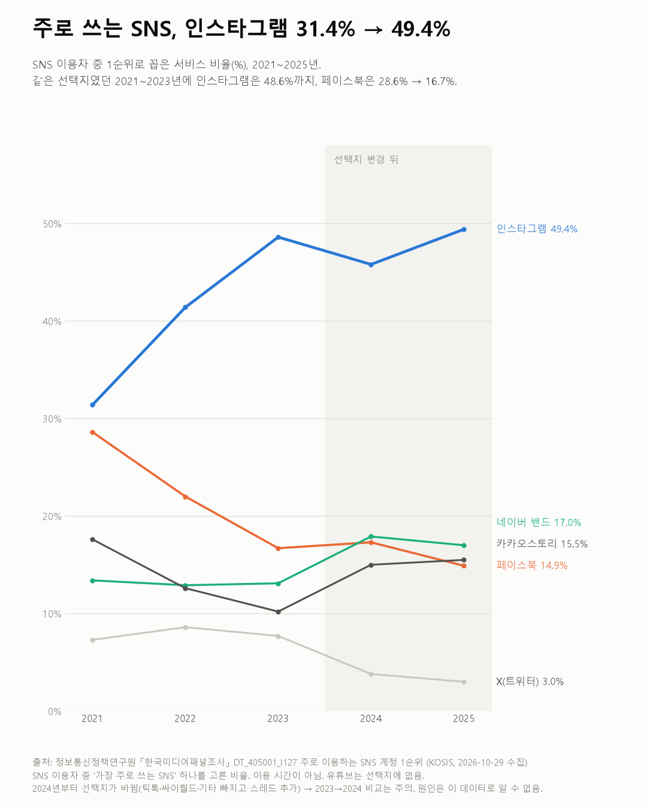
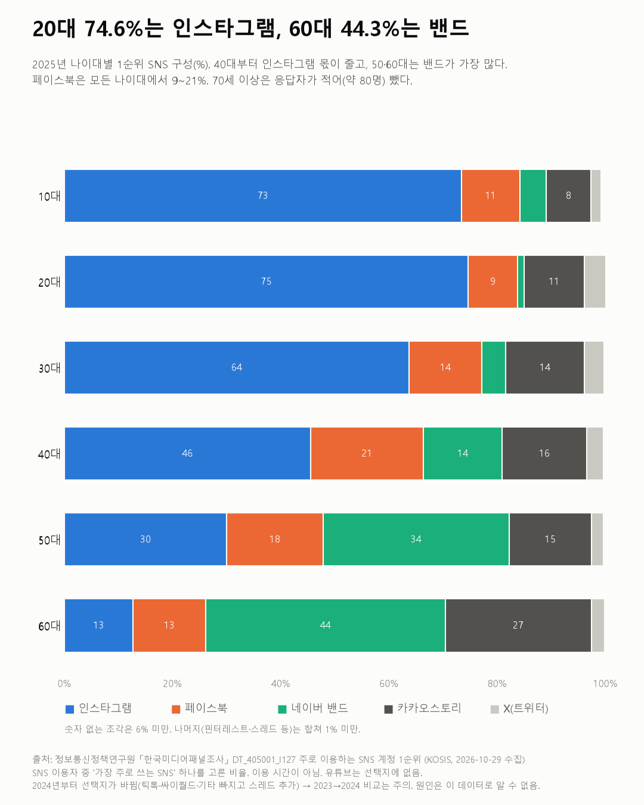

주로 쓰는 SNS, 인스타그램 31.4% → 49.4%
한국미디어패널조사

질문
SNS를 쓰는 사람들은 어떤 SNS를 '주로' 쓰나? 2021년부터 2025년까지 1순위가 어떻게 바뀌었고, 나이대별로 다른가?
사용 데이터와 출처
| 데이터 | 출처 | 쓰임 |
|---|---|---|
| 주로 이용하는 SNS 계정 1순위 (KOSIS DT_405001_I127) | 정보통신정책연구원 「한국미디어패널조사」 | SNS 이용자가 1순위로 꼽은 서비스, 성별·나이대 |
- SNS 이용자 중 '가장 주로 쓰는 SNS' 하나를 고른 비율이다. 해마다 선택지 합이 100%(±0.2, 원자료 반올림)인 것으로 분모를 확인했다.
- 응답자 수는 가중값으로 해마다 약 5,300~5,700명. 70세 이상은 약 50~80명뿐이라 나이대 비교에서 뺐다.
- 유튜브는 선택지에 없다. 이 조사에서 'SNS 계정'은 인스타그램·페이스북·밴드 등이다.
- 2024년부터 선택지가 바뀌었다. 틱톡(2023년 3.0%)·싸이월드·기타가 빠지고 스레드가 들어갔다. 그래서 같은 선택지인 2021~2023년 변화를 중심으로 보고, 2024~2025년은 따로 본다.
- 교차 확인: 2021→2023년 인스타그램 31.5→48.6%, 페이스북 28.6→16.7%, 카카오스토리 17.6→10.2%, 밴드 13.3→13.1%가 보도(정보통신정책연구원 보고서 인용)와 같다(0.1%p 차이는 반올림).
- 수집일: 2026-10-29 (KOSIS 오픈API).
인사이트
1. 인스타그램을 1순위로 꼽은 사람은 2021년 31.4%에서 2023년 48.6%가 됐다. 선택지가 바뀐 뒤인 2025년에도 49.4%로 1위다.
2. 페이스북은 같은 기간 28.6%에서 16.7%로 줄었다. 2025년엔 14.9%다.
3. 20대의 74.6%, 10대의 73.4%가 인스타그램을 1순위로 꼽았다(2025년). 20대는 2021년 44.8%였다.
4. 50·60대는 네이버 밴드가 가장 많다. 2025년 50대 34.4%, 60대 44.3%다. 60대는 카카오스토리(27.0%)가 그다음이다.
5. 페이스북은 나이대 차이가 작다. 2025년 모든 나이대에서 9~21% 사이다.

한계
이 데이터로 말할 수 없는 것
- 1순위만 본다. 여러 SNS를 함께 쓰는 사람이 많지만, 이 표는 하나만 고른 답이다. 이용 시간이나 영향력과 다르다.
- 2024년 선택지 변경. 틱톡을 고르던 사람이 다른 답으로 옮겨갔을 수 있다. 2024년에 밴드·카카오스토리가 오른 것(밴드 13.1→17.9%)이 실제 변화인지 선택지 변화 탓인지 이 표로는 가를 수 없다.
- 유튜브·틱톡 같은 동영상 플랫폼은 빠져 있다. '사람들이 가장 많이 쓰는 앱'으로 읽으면 안 된다.
- 나이대 응답자 수가 해마다 달라진다. 20대는 1,256명(2021)에서 930명(2025)으로 줄었다(가중값).
- 특정 서비스를 추천하지 않는다. 원인도 말하지 않는다.
전제 기록
데이터를 보기 전에 적어둔 것, 그리고 보고 나서 바꾼 것
- 전제 기록(premises)(데이터를 받기 전에 작성)를 따랐다. 받기 전에 '선택지가 해마다 같은지 확인'을 적어 두었고, 받은 뒤 2024년 변경을 찾아 비교 범위를 2021~2023년으로 나눴다.